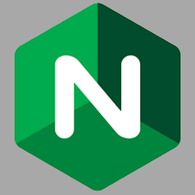
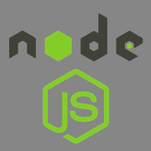

The making of bwillis.info
To demonstrate a solid technical foundation, I coded and designed my website from scratch without the help of any templates or content management systems. I used the Vim Command Line Editor for coding, SASS for a more readable CSS syntax, Adobe Photoshop for editing graphics, and git with github for version control. I started my website's design by sketching several layouts on paper, before finally moving to the computer to lay down HTML and block in a rough prototype. Once satisfied with the prototype, I checked the design for usability and adapted it to as many viewports as possible. Lastly, I styled and added content before doing one final quality assurance check.
Not only was the website coded and designed from scratch, but I also manage the host server and set it up from scratch.
Not only was the website coded and designed from scratch, but I also manage the host server and set it up from scratch. The server runs off of Linux Ubuntu, and the website is served using Nginx. I push updates directly to the webserver via git with webhooks. Over the years I've maintained my portfolio website and continue to push new updates as I work on new projects, learn new skills, and expand my visual vocabulary.
Skills & Programs
 Programming
Programming Writing
Writing UI/UX Design
UI/UX Design
 HTML5
HTML5 CSS3
CSS3 JavaScript
JavaScript SASS
SASS Git/Github
Git/Github Photoshop
Photoshop Linux
Linux Vim
Vim- Nginx
- NodeJS